来源：https://zzi7a49xoa.feishu.cn/docx/I5Qnd3yq7o8D23xkEhjcOYJwn3g
大家好，我是熊猫Jay，你是否曾经被某个Chrome插件深深地吸引，甚至萌生过自己也能开发一个的念头？是否想过没有开发经验怎么完成插件开发呢？
不论你是 开发者 还是 没有开发经验的小伙伴，这篇文章都是为你准备的。我们将一步步引导你完成自己的第一个Chrome插件。
需要声明的是, 本视频的目的绝不是教大家开发怎样精美,功能如何炫酷的插件. 而是讲解任何人都可以结合提示词, 描述相对简单的需求, 让ChatGPT提供代码, 然后逐步排查问题, 最终拿到满足需求的插件.
我知道小伙伴们可能在想, 你是不是在吹牛啊, 我们不懂代码的人可以做? 而且你熊猫Jay好像也有程序员背景呀, 我们可没有啊!
的确可以做, 这篇文章将结合视频带领大家进行实践, 我不做任何主观干涉, 那话不多说, 我们直接开始吧!
从这篇文章中，你可以学会以下几点：
为更好地将制作方式讲清楚, 我准备了一套视频, 带大家手把手实战谷歌插件的开发, 不需要任何开发经验也可以轻松上手.
视频大纲如下:
建议先看完视频, 按照视频进行实战, 模糊的地方可以查看文档. 视频如下:
首先，你需要安装以下开发工具：
视频中使用的是Sublime, 下载地址为: https://www.sublimetext.com/
核心文件的讲解稍显枯燥, 但是对于我们理解开发过程, 和后期排查错误都起到很大的作用.
没有开发经验的小伙伴会有些迷糊, 没关系, 简单理解即可. 不理解可以先忽略!!!
manifest.json：插件的主要配置文件，为JSON格式，必须放在根目录下，它为浏览器扩展提供了插件的蓝图，包含几个重要的点：
background.js：后台脚本，用于监听浏览器事件进行访问数据，协调任务，如以下的简单案例：
注意：
插件的主要交互界面, 展示核心信息. 可以包含如下功能：
如视频案例: 自动分组浏览器Tab 的配置窗口, 或者 分割图片为四等份 的上传文件窗口.
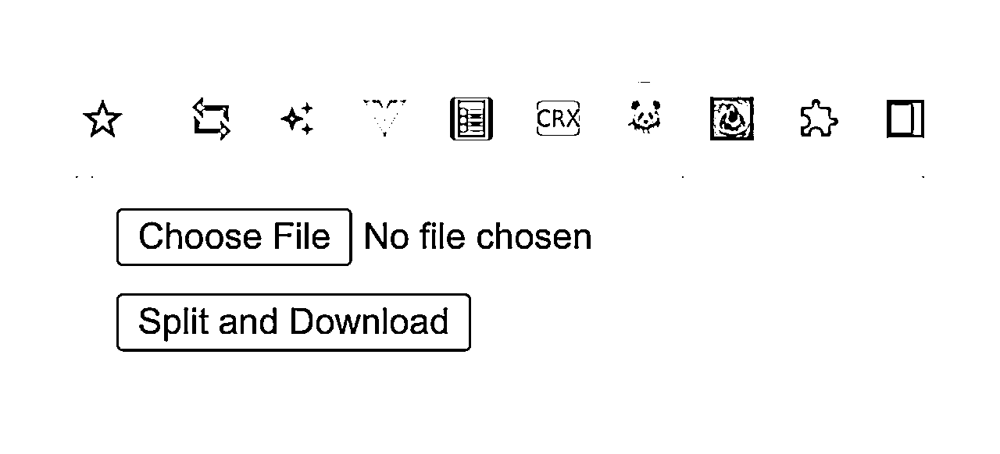
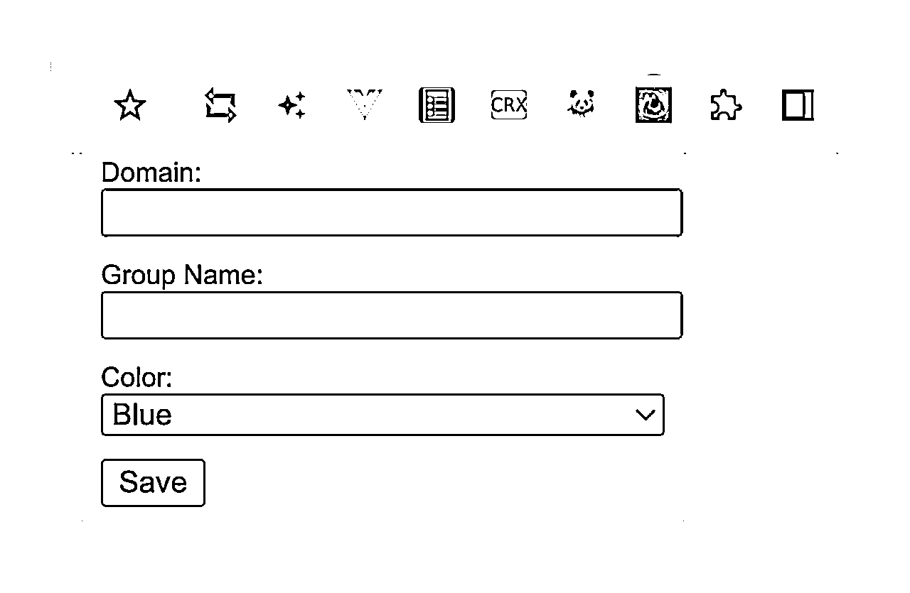
插件可以利用该文件，注入代码到主页上（被指定的页面），可以访问和修改网页内容, 并且允许插件与浏览器的页面进行交互。如以下动作:
允许用户配置扩展设置的页面。如例, 一个开关按钮，允许用户选择是否启动某一功能。
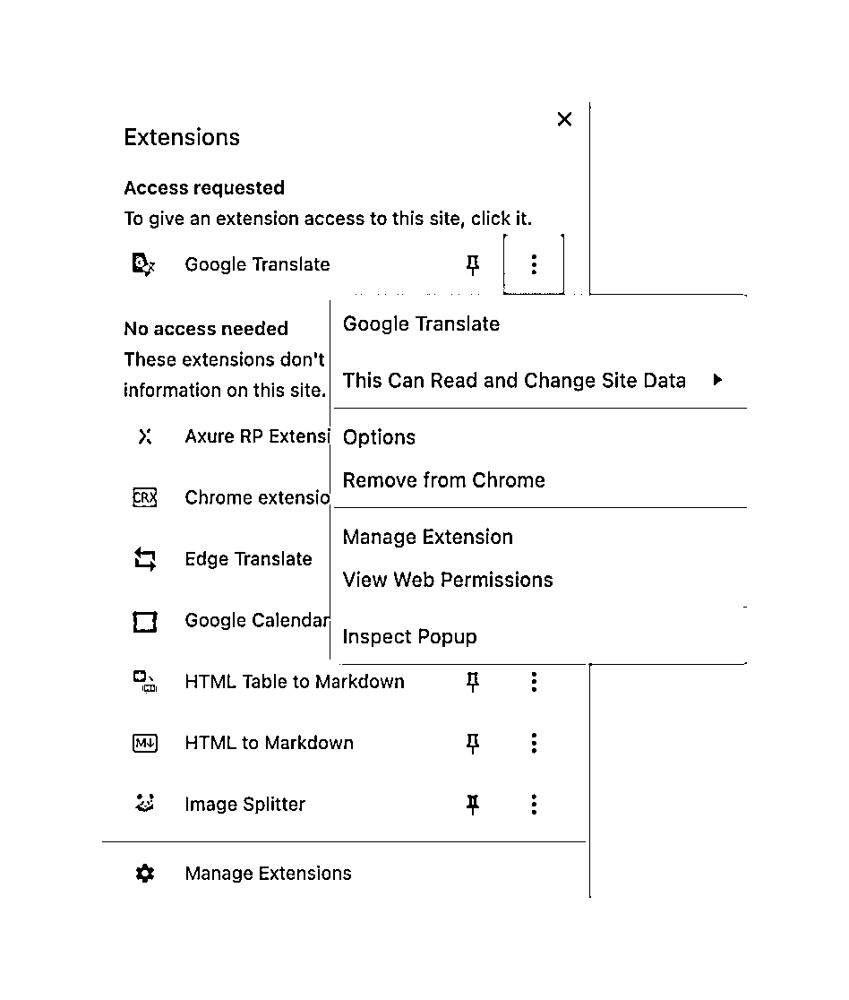
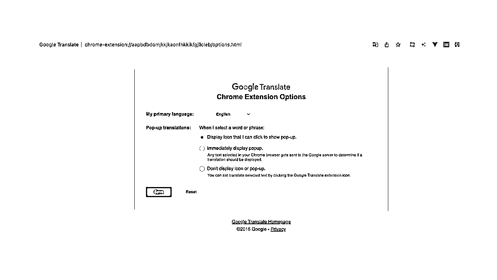
上手一个Demo案例, 有助于找找感觉, 再编写相对复杂的插件, 将更加游刃有余!
manifest.json 文件是Chrome插件的配置文件，包含插件的名称、描述、版本、权限等信息。下面是一个基础的 manifest.json 文件的示例；
{
"manifest_version": 3,
"name": "My First Chrome Extension",
"version": "1.0",
"action": {
"default_popup": "popup.html",
"default_icon": "icon.png"
},
"background": {
"service_worker": "background.js"
},
"permissions": ["notifications"],
"icons": {
"16": "icon.png",
"48": "icon.png",
"128": "icon.png"
}
}
在 background.js 文件中，可以监听和处理浏览器事件。例如，以下代码在每个新标签页打开时显示一个通知：
chrome.runtime.onMessage.addListener((message, sender, sendResponse) => {
if (message.command === 'createNotification') {
chrome.notifications.create({
type: 'basic',
iconUrl: 'icon.png',
title: 'Button clicked!',
message: 'The button was clicked.'
});
}
});
popup.html 是点击插件图标时显示的弹出窗口的HTML文件。例如，以下代码创建一个包含按钮的弹出窗口：
在 popup.js 文件中，可以添加事件监听器以处理用户交互。例如，以下代码在按钮被点击时显示一个通知：
document.getElementById('myButton').addEventListener('click', function() {
chrome.runtime.sendMessage({ command: 'createNotification' });
});
在完成开发后，需要在Chrome浏览器中加载插件：
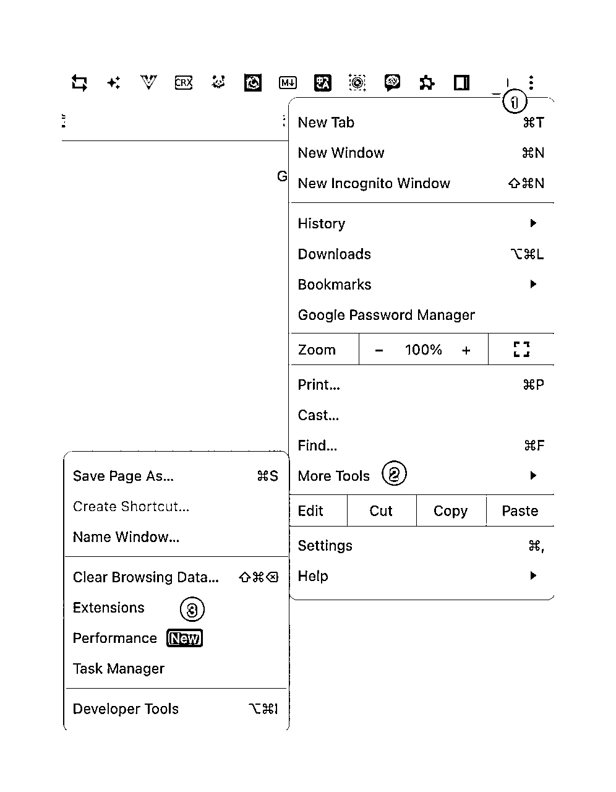
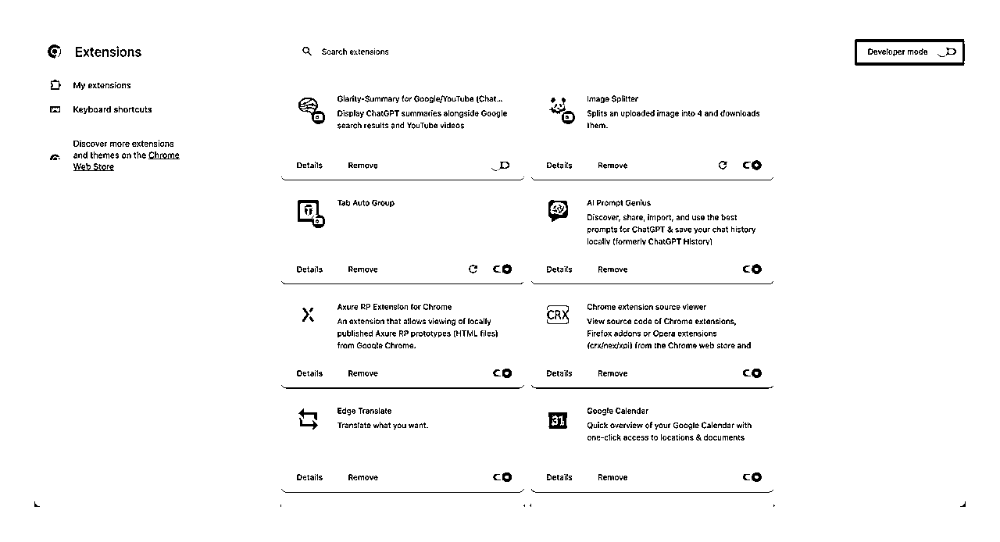
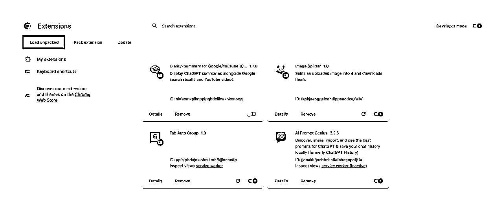
下载地址: https://pan.quark.cn/s/0f42823c18a3
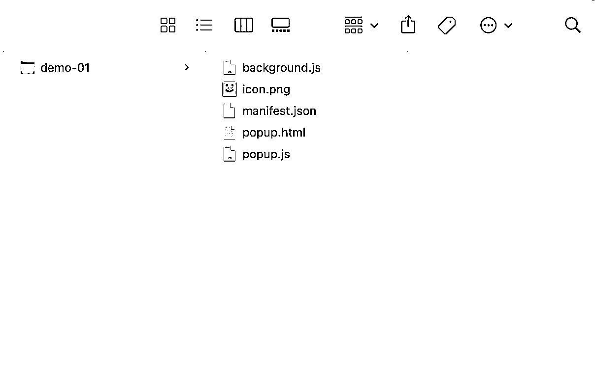
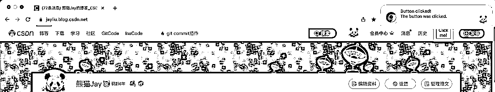
FAQs:
1、部署代码后，点击按钮无法显示通知？
需要开启浏览器的通知，才可以正常实现该案例。设置Chrome的通知权限，你可以按照以下步骤操作：
初学者，可暂时跳过，有需要再回头来看。
如果插件已经完成并通过了测试，可以打包插件以进行发布：
完成以上步骤后，将生成一个 .crx 文件和一个 .pem 文件。.crx 文件就是你可以发布的Chrome插件，.pem 文件是你的私钥，需要保存好。
初学者，可暂时跳过，有需要再回头来看。
最后，你可以在Chrome Web Store发布你的插件：
以上就是开发和发布Chrome插件的基本步骤。希望这能帮助你开始你的Chrome插件开发旅程！
适合初学者, 和没有开发经验的小伙伴!
JavaScript运行时的错误通常会在浏览器的控制台中显示。你可以在Chrome的开发者工具中查看这些错误。
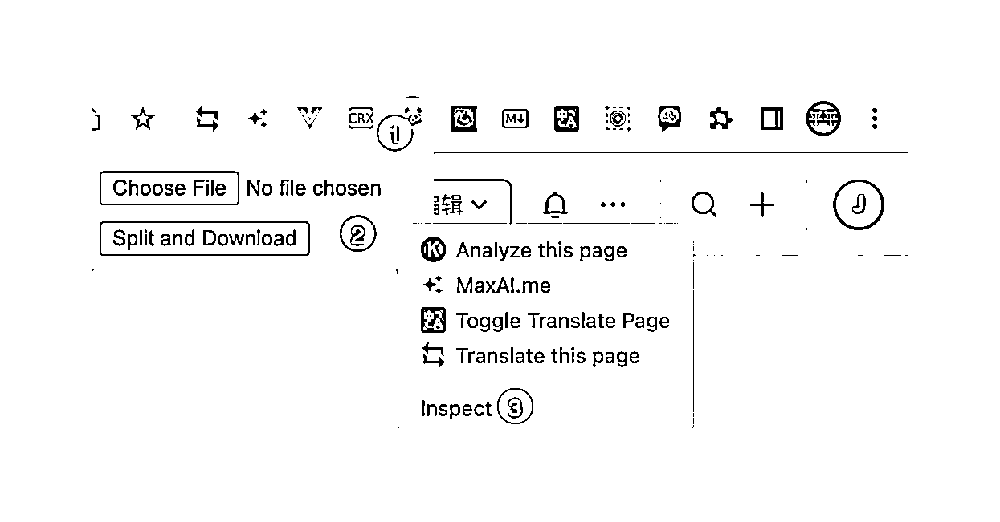
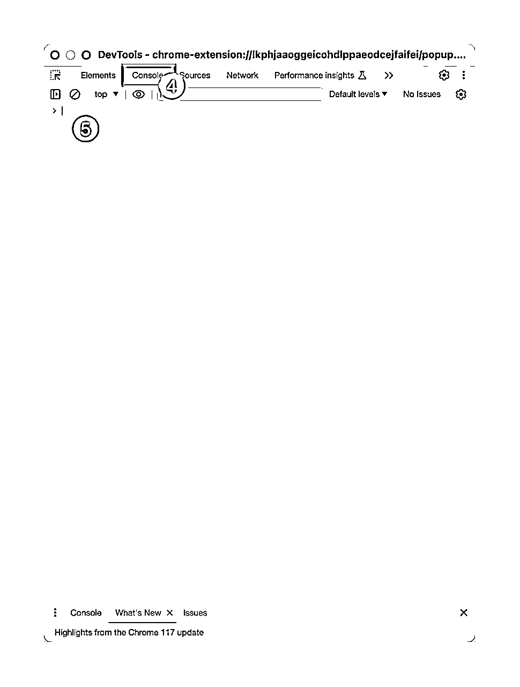
适合初学者和没有开发经验的小伙伴, 该条纠错方式, 在视频教程中使用频率非常高, 需要小伙伴们仔细学习!
如果你的插件有一个背景页，你也可以查看这个背景页的控制台。在 chrome://extensions/ 页面，点击你的插件下的 "background page"，可以打开背景页的开发者工具。步骤如下:
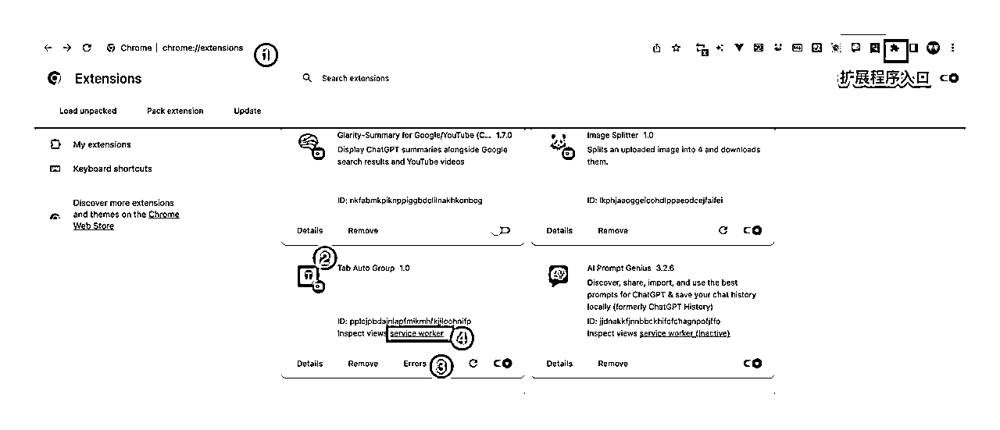
第3步显示的出错内容.
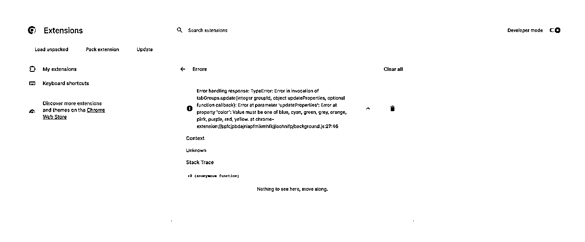
第4步显示的出错内容,与第3步一致!
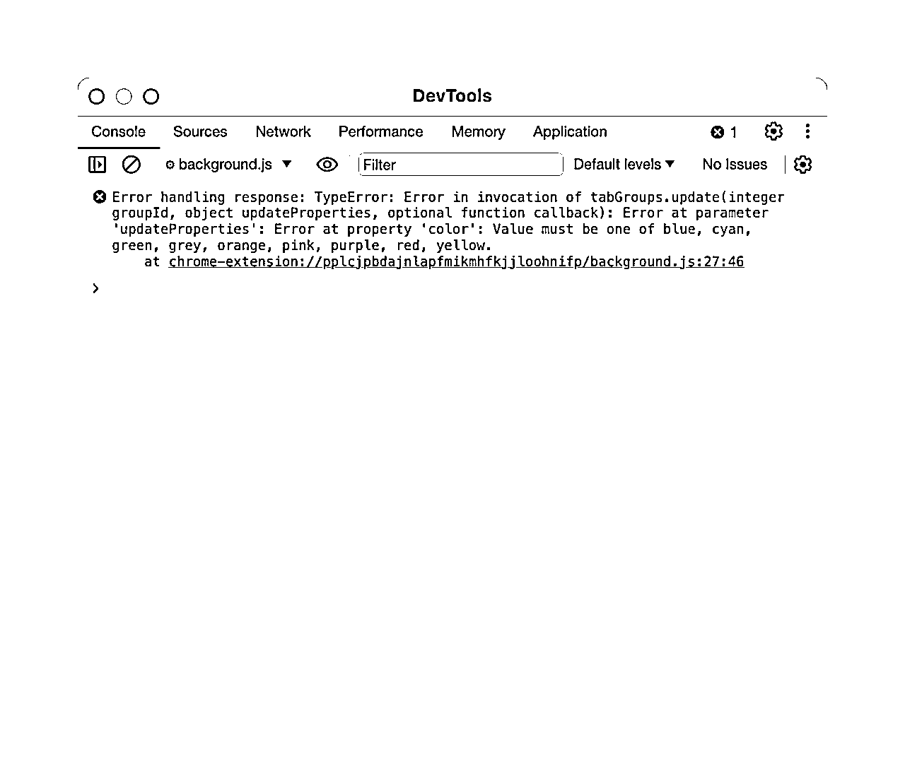
适合有开发经验、或者想要深入学习插件开发的小伙伴们!
没有开发经验的小伙伴, 暂时忽略!
具体每个案例的操作步骤,可以按照 培训视频 章节里的视频内容来操作.
可以根据下面每个案例中我提供的对话链接, 来观察我与ChatGPT的对话过程.
解决痛点:
想要MJ的四张图片,但操作相对繁琐.
核心功能:
提示词:
你是一位资深程序员，能够熟练开发google浏览器插件。我需要请你帮我开发一个插件，用于将用户上传的图片，平均切分为4张图片，并自动下载到本地电脑上，请告诉我实现的步骤，并给出完整的代码
ChatGPT对话历史: https://chat.openai.com/share/0d52e479-f549-4a0f-9807-c7cf21eee5e8
代码下载: https://pan.quark.cn/s/bede7f19d73a
解决痛点:
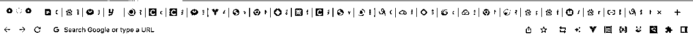
核心功能:
提示词:
# 角色: 你是一位资深程序员，能够熟练开发google浏览器插件。 # 背景: 我需要开发一个插件，用于将google浏览器的tab自动分组, 根据配置的域名自动分组. ## 功能1: 点击插件, 可以输出需要设置的域名, 分组名称, 和分组的颜色, 颜色有(Blue、Red、Grey、Yellow、Green) ## 功能2: 点击保存后, 页面消失,显示“保存成功” ## 功能3: 当在浏览器打开对应域名的链接, 后台将自动根据分组名称,和颜色, 进行分组. ### 3.1 若打开新链接时,没有分组,则创建分组 ### 3.2 若打开新链接时,已经存在相同域名的分组, 则自动合并 # 目的: 通过插件,如果用户打开过多的浏览器tab, 这样看着会比较混乱. 自动分组后, 会显得更加整洁和干净. # 任务: ## 任务1:请告诉我需要准备的文件 ## 任务2:请输出每个文件对应的代码, 注意重要的代码需要增加注释, 确保没有编程经验的人也能看懂 ## 任务3:请检查代码是否存在问题 ## 任务4:请告诉我步骤方式和注意点
ChatGPT对话历史: https://chat.openai.com/share/22a71318-be9e-41fa-8129-5b1c17218fce
代码下载: https://pan.quark.cn/s/4b859e1dd3a7
为了写出表述更加完善的提示词, 我们需要把需求拆分到最小化,可以小到这每一点只包含一个小功能. 建议采取用户故事的编写方式来叙述: 谁, 在什么地方, 做了什么动作, 达到了什么效果.
提示词的编写方式技巧很多, 但是万变不离其宗, 即 表述清楚意思, 不要含糊其辞, 至于使用什么提示词模版或者技巧反而不是最重要的, 那些模版还是为了帮助我们把话说到位而已!
推荐这篇文章: , 先看懂这篇提示词最佳实践尤为重要, 这样再学习更加复杂的模版或者结构化提示词就会变得容易些.
正确部署插件的步骤GPT会提供. 按照步骤来执行安装, 再进行测试即可.
测试过程中若插件没有按照预期生效, 按照错误信息的定位方式来找到问题(见 快速定位问题 章节), 并完整地提供给GPT.
为保证功能的正确性, 建议进行多轮测试, 完全达到预期的效果为止. 如果第一次的答案没有完全解决问题，不要放弃, 继续定位到问题, 把错误信息给到ChatGPT.
如果经历很多轮的对话, 会导致此次对话超过模型的token限制, 那么ChatGPT会遗忘之前的内容.
所以我建议当经历多轮对话后, 可以新建一个聊天窗口, 把完整的代码和需求背景输入给chatgpt, 重新开启新的提问. 这是一种有效的措施.
只请求你的扩展程序需要的最小权限。这可以帮助你的用户理解你的扩展程序为什么需要这些权限，也可以避免用户担心安全问题。
content_scripts 允许你的扩展程序在用户浏览网页时插入代码。然而，这也可能导致和网页上的其他脚本冲突。当需要使用 content_scripts 时，应尽量避免使用全局变量，并且小心处理事件监听器和定时器。
后台页是运行在后台的JavaScript脚本，可以用来处理浏览器事件。当用户没有打开你的扩展程序的弹出窗口或其他界面时，background 页仍然可以运行。
Chrome 提供了丰富的API供你的扩展程序使用，比如操作标签页、读写cookies、显示通知等。理解并利用这些API可以帮助你更好地实现功能。
当你准备发布你的扩展程序时，需要确保它遵循了Chrome Web Store的所有政策。
思考你的用户将如何使用你的扩展程序，然后尽可能优化用户体验。例如，你可以添加清晰的指示和帮助信息，确保你的界面易于理解和操作。
确保代码有适当的错误处理，不仅限于try-catch结构，还应考虑更复杂的错误情况，比如网络问题或者用户输入错误。
前面我也提到阅读官方手册 谷歌插件官方文档 后，可以与GPT沟通时，提出更加专业的问题，这对于后期做出更加复杂的插件也会有巨大的帮助。
以上就是一些Chrome插件开发的最佳实践。在开发过程中始终保持学习和思考，你会不断进步的！
本文带我们快速了解了chrome插件的开发步骤、demo、经典案例、最佳实践。希望这篇文章可以给到大家更多思路, 来丰富我们自己的产品, 或者开发出帮助自己提升效率的小工具! 相信在实践过程你会有更多新的思路!
若小伙伴针对文章存在问题或者建议, 欢迎随时与我讨论!